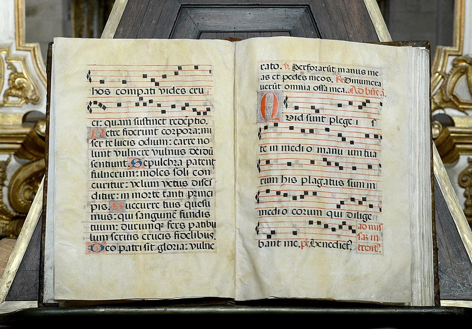
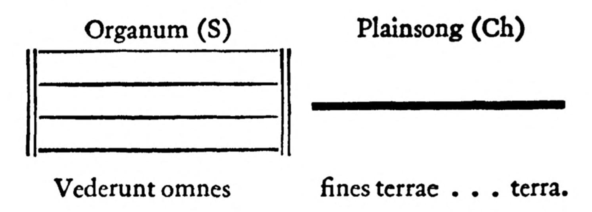
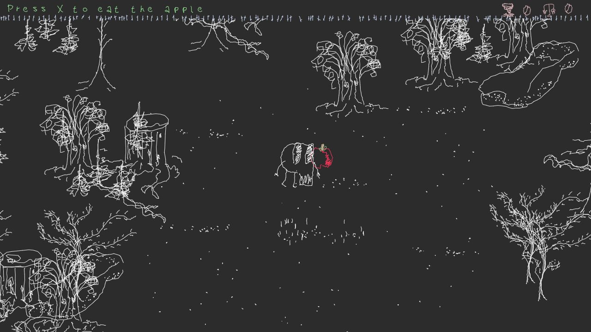
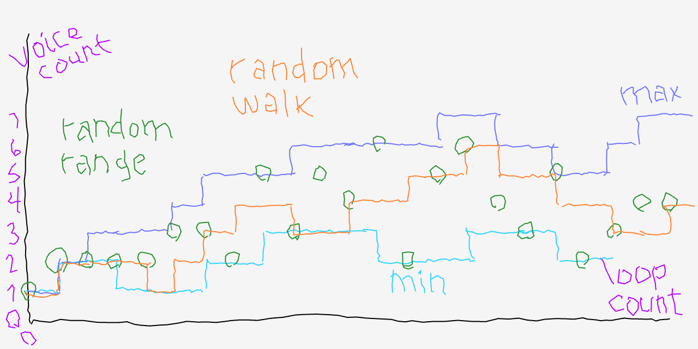
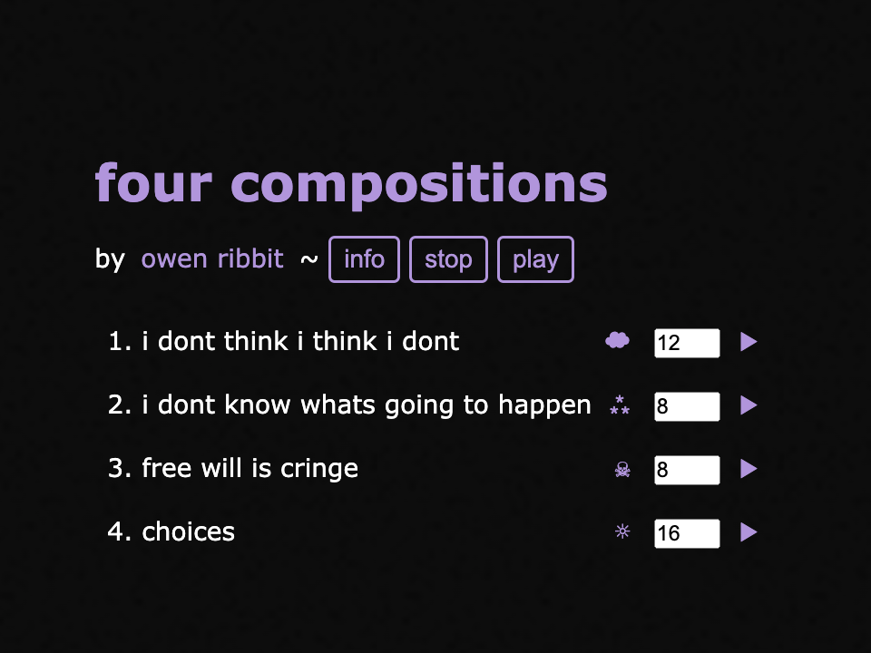

(guided real-time euphony generator)
GREG is a JavaScript program that uses procedural generation to create endless music for video games and animations.
The name GREG comes from Gregorian chant.

https://commons.wikimedia.org/wiki/File:Tib%C3%A3es_March_2016-21.jpg
I was inspired by the aesthetics of Gregorian chant as well as the history of compositional rules. The structure of compositions generated by GREG at first loosely followed the development of chant and sacred music. Early forms of chant had monophonic melodies, with no strict rhythmic meter, sung by a soloist or chorus in unison.
"Gregorian Chant", The Harvard Dictionary of Music (1950), p. 306. https://archive.org/details/in.ernet.dli.2015.215605/page/n319/
Later, forms like organum introduced parallel harmonies, at a fixed fourth or fifth interval. Eventually, independent rhythmic and harmonic movement was introduced.

"Organum", The Harvard Dictionary of Music (1950), p. 541. https://archive.org/details/in.ernet.dli.2015.215605/page/n555/
Ave verum Corpus
https://www.verbumgloriae.es/project/ave-verum-corpus/
Ave verum corpus
https://en.wikipedia.org/wiki/File:Ave_verum_Mozart_Senftenberg2008.ogg

infinite hell, 2020.
I had the idea for GREG when I was working on a game called infinite hell as part of ProcJam 2020, a game jam about procedural generation, a popular technique for game developers, in which programs are designed to generate content like level maps, narrative, and other components, making each game play unique. The religious associations of chant matched the theme of the project. It's also great music for coding.
First 2 loops of infinite hell.
Later, deeper into hell.
Music generated by GREG is indefinite and always changing, so it works with games which have variable play time, and it can react to changes in game states. In infinite hell the key descends a whole note when the player descends further into hell.

garden, 2021.
Another game, garden, a walking simulator loosely inspired by The Garden of Earthly Delights by Hieronymus Bosch, also uses GREG for background music, and variations change based on areas of the map.
The first version was very simple and the variations were designed specifically for parameters. As I wanted to add more parameters for variations, I eventually settled on a paradigm with a property class that can represent values like numbers and lists, and a generic modulator class that has properties, like minimum, maximum, range, chance and step, which themselves can have modulators (it is restricted to two levels of modulators, after that it's too complicated to think about).

This chart shows an example of one of the main variations, the number of voices per part.
Some variations are "non-destructive" in that the original melody persists from loop to loop. Other "destructive" variations change the original melody permanently, by slicing out a chunk of melody and moving it to a different section or adding passages of harmony or counterpoint.
I began using GREG to score animations.
The variations are useful because I can quickly generate new versions of a theme.
Two variations of the theme for lines.
As I've spent more time with it, I've realized simple starting compositions are better because it gets weird more quickly, and it's maybe more obvious to the listener what the music is doing.
The theme from a crooked line.

four compositions is an album of music that uses GREG. The website interface lets the listener set the number of loops for each track on the album.
The next step I've been considering is trying GREG in live performance. Because GREG generates all of the music after I press the start button, I need to figure out how it would be performed, or how I could perform along with it.
In this case, I created what I call "live loop mode". I control the number of voices and whether they modulate. This is fun, but the performance is minimal, I mostly listen and occasionally press keys on the keyboard .
In this case, I'm playing along with a sampler, playing kind of musique concrète style samples. The samples come from sound effects used video games where I originally used GREG.
In another case, I play drums along with GREG. This is also fun, but I'm not good at drumming anymore, so I would need to start practicing again.
GREG uses Tone.js for audio synthesis, sample playback and sequencing.
Link: owen.cool/talks/wac2025/